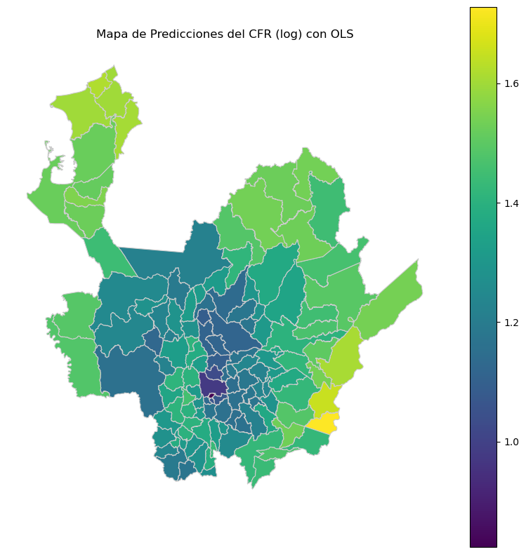
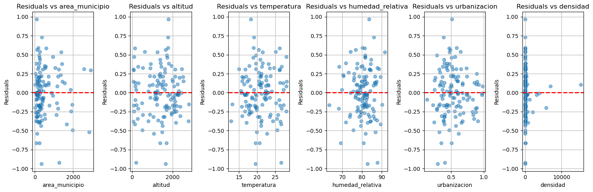
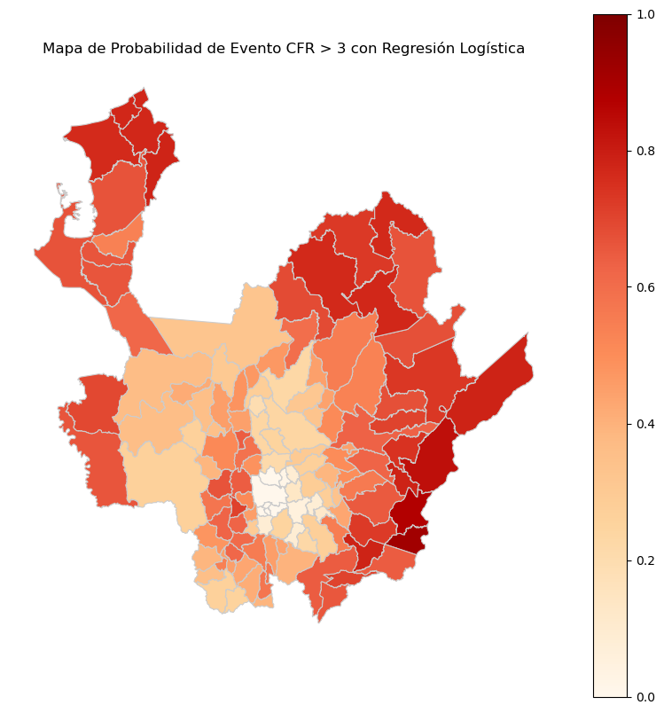
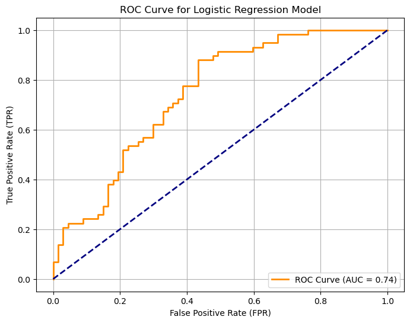
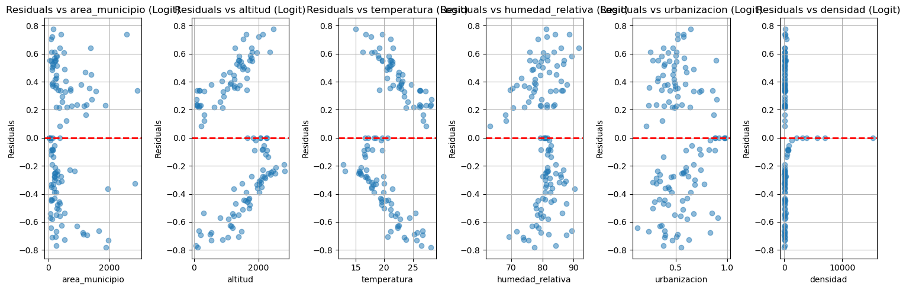
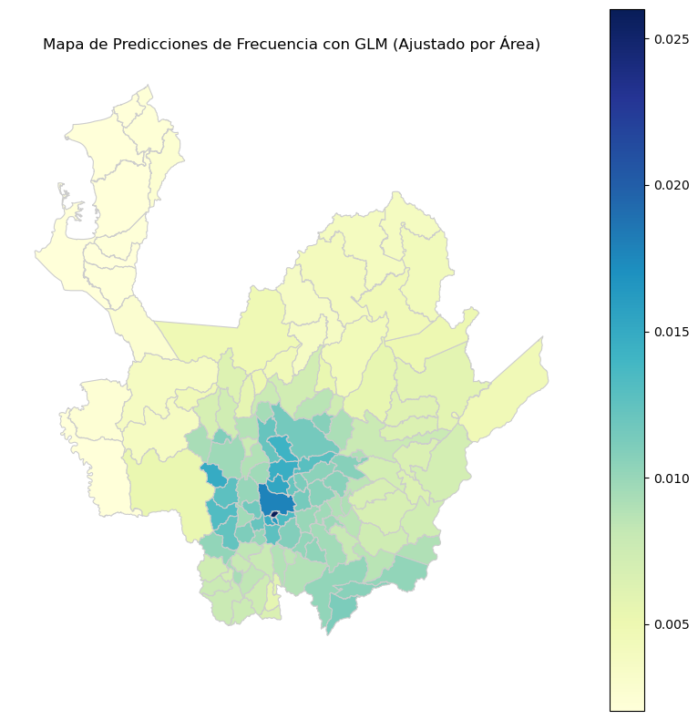
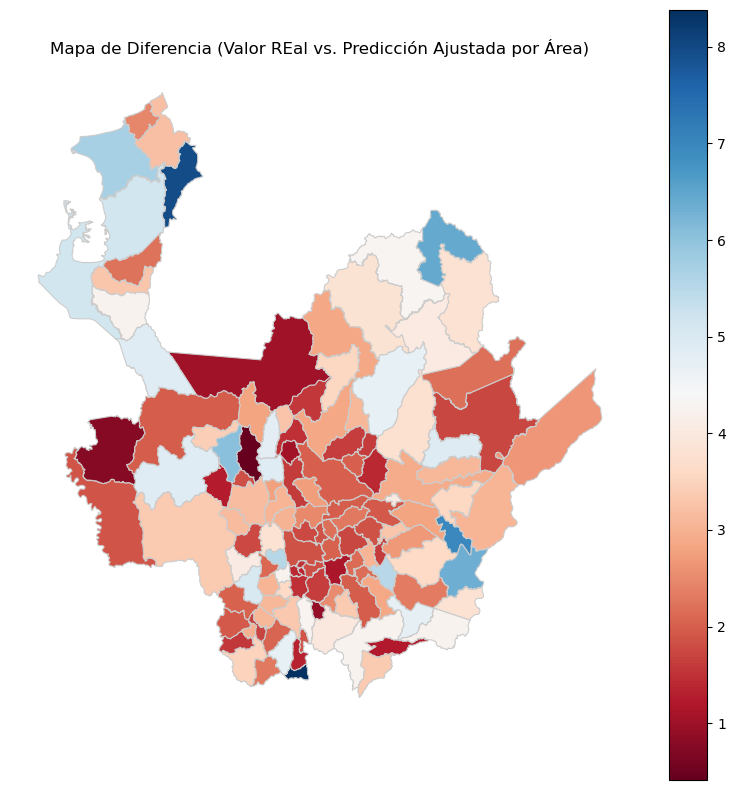
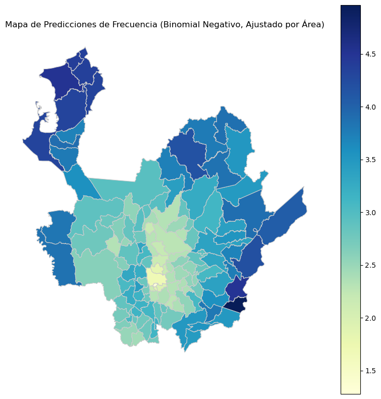
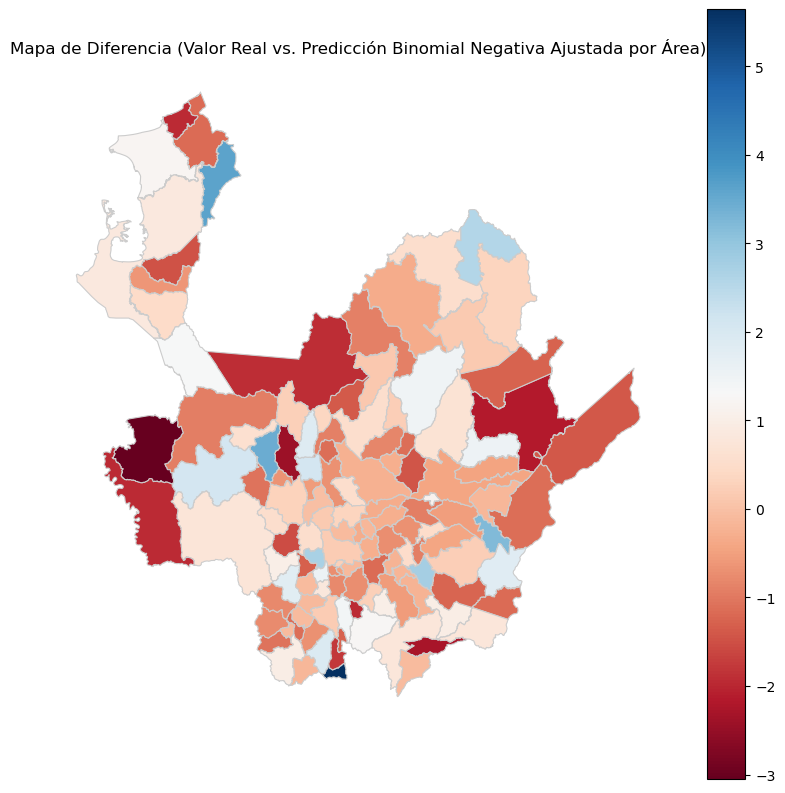
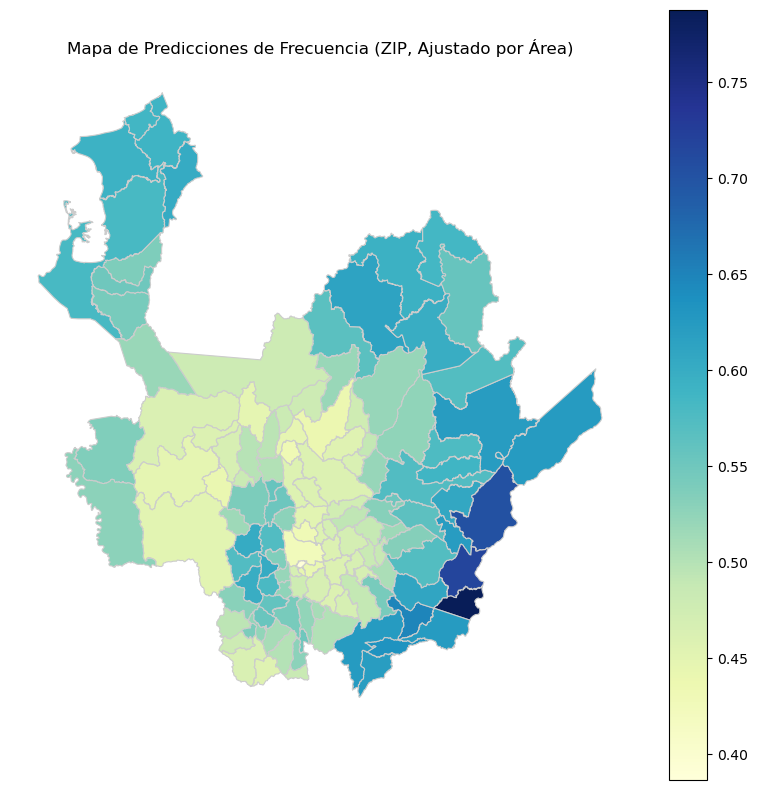

Modelos Lineales Generalizados (GML)#
Regresión Lineal Gaussiana#
import geopandas as gpd
import numpy as np
import matplotlib.pyplot as plt
import statsmodels.api as sm
from sklearn.preprocessing import StandardScaler
---------------------------------------------------------------------------
ModuleNotFoundError Traceback (most recent call last)
Cell In[1], line 4
2 import numpy as np
3 import matplotlib.pyplot as plt
----> 4 import statsmodels.api as sm
5 from sklearn.preprocessing import StandardScaler
ModuleNotFoundError: No module named 'statsmodels'
gdf = gpd.read_file(
"https://github.com/algarciach/AnalisisGeoespacial/raw/main/Covid19_model/Data/covid19_municipios_antioquia.gpkg"
)
gdf.info()
<class 'geopandas.geodataframe.GeoDataFrame'>
RangeIndex: 125 entries, 0 to 124
Data columns (total 15 columns):
# Column Non-Null Count Dtype
--- ------ -------------- -----
0 codigo_municipio 125 non-null object
1 nombre_municipio 125 non-null object
2 codigo_subregion 125 non-null object
3 nombre_subregion 125 non-null object
4 area_municipio 125 non-null float64
5 altitud 125 non-null float64
6 temperatura 125 non-null float64
7 humedad_relativa 125 non-null float64
8 poblacion 125 non-null int64
9 urbanizacion 125 non-null float64
10 densidad 125 non-null float64
11 muertes_covid19 125 non-null int64
12 recuperados_covid19 125 non-null int64
13 cfr 125 non-null float64
14 geometry 125 non-null geometry
dtypes: float64(7), geometry(1), int64(3), object(4)
memory usage: 14.8+ KB
gdf["y_log"] = np.log(gdf["cfr"] + 1)
var = ["area_municipio", "altitud", "temperatura", "humedad_relativa", "urbanizacion", "densidad"]
st = StandardScaler()
X_scaled = st.fit_transform(gdf[var])
X = sm.add_constant(X_scaled)
y = gdf["y_log"]
model = sm.OLS(y, X).fit()
print(model.summary())
OLS Regression Results
==============================================================================
Dep. Variable: y_log R-squared: 0.199
Model: OLS Adj. R-squared: 0.159
Method: Least Squares F-statistic: 4.899
Date: Sat, 26 Jul 2025 Prob (F-statistic): 0.000166
Time: 01:02:40 Log-Likelihood: -33.475
No. Observations: 125 AIC: 80.95
Df Residuals: 118 BIC: 100.7
Df Model: 6
Covariance Type: nonrobust
==============================================================================
coef std err t P>|t| [0.025 0.975]
------------------------------------------------------------------------------
const 1.3240 0.029 45.473 0.000 1.266 1.382
x1 -0.0201 0.036 -0.555 0.580 -0.092 0.052
x2 -0.2719 0.214 -1.268 0.207 -0.697 0.153
x3 -0.1359 0.213 -0.638 0.525 -0.558 0.286
x4 -0.0455 0.034 -1.341 0.183 -0.113 0.022
x5 -0.0099 0.032 -0.306 0.760 -0.074 0.054
x6 -0.0452 0.033 -1.371 0.173 -0.111 0.020
==============================================================================
Omnibus: 2.070 Durbin-Watson: 1.760
Prob(Omnibus): 0.355 Jarque-Bera (JB): 1.736
Skew: -0.059 Prob(JB): 0.420
Kurtosis: 3.565 Cond. No. 16.2
==============================================================================
Notes:
[1] Standard Errors assume that the covariance matrix of the errors is correctly specified.
# Obtener las predicciones
y_pred = model.predict(X)
gdf["y_pred"] = y_pred
fig, ax = plt.subplots(1, 1, figsize=(10, 10))
gdf.plot(
column="y_pred", cmap="viridis", legend=True, ax=ax, linewidth=0.8, edgecolor="0.8"
)
ax.set_title("Mapa de Predicciones del CFR (log) con OLS")
ax.set_axis_off()
plt.show()

# Calculate the residuals
residuals = y - y_pred
# Create figure for residuals
plt.figure(figsize=(15, 5))
for i, variable in enumerate(var):
plt.subplot(1, len(var), i + 1)
plt.scatter(gdf[variable], residuals, alpha=0.5)
plt.axhline(0, color="red", linestyle="--", lw=2)
plt.title(f"Residuals vs {variable}")
plt.xlabel(variable)
plt.ylabel("Residuals")
plt.grid(True)
plt.tight_layout()
plt.show()

Regresión Logística#
from sklearn.metrics import roc_curve, roc_auc_score
gdf["evento_cfr"] = np.where(gdf["cfr"] > 3, 1, 0)
var = ["area_municipio", "altitud", "temperatura", "humedad_relativa", "urbanizacion", "densidad"]
y = gdf["evento_cfr"]
st = StandardScaler()
X_scaled = st.fit_transform(gdf[var])
X = sm.add_constant(X_scaled)
model = sm.Logit(y, X).fit()
print(model.summary())
Optimization terminated successfully.
Current function value: 0.573067
Iterations 10
Logit Regression Results
==============================================================================
Dep. Variable: evento_cfr No. Observations: 125
Model: Logit Df Residuals: 118
Method: MLE Df Model: 6
Date: Sat, 26 Jul 2025 Pseudo R-squ.: 0.1701
Time: 01:03:16 Log-Likelihood: -71.633
converged: True LL-Null: -86.319
Covariance Type: nonrobust LLR p-value: 5.174e-05
==============================================================================
coef std err z P>|z| [0.025 0.975]
------------------------------------------------------------------------------
const -0.9660 0.722 -1.337 0.181 -2.382 0.450
x1 -0.1266 0.247 -0.513 0.608 -0.610 0.357
x2 -0.8958 1.522 -0.589 0.556 -3.879 2.087
x3 -0.1861 1.506 -0.124 0.902 -3.138 2.766
x4 -0.2994 0.237 -1.266 0.206 -0.763 0.164
x5 -0.0707 0.252 -0.280 0.779 -0.565 0.423
x6 -4.6452 3.622 -1.283 0.200 -11.744 2.454
==============================================================================
y_prob = model.predict(X)
gdf["probability_eventCFR"] = y_prob
# Plot map with probabilities predicted by the logistic regression
fig, ax = plt.subplots(1, 1, figsize=(10, 10))
gdf.plot(
column="probability_eventCFR",
cmap="OrRd",
legend=True,
ax=ax,
linewidth=0.8,
edgecolor="0.8",
vmin=0,
vmax=1,
)
ax.set_title("Mapa de Probabilidad de Evento CFR > 3 con Regresión Logística")
ax.set_axis_off()
plt.show()

# Calculate ROC curve and AUC
fpr, tpr, thresholds = roc_curve(y, y_prob)
auc = roc_auc_score(y, y_prob)
# Plot ROC curve
plt.figure(figsize=(8, 6))
plt.plot(fpr, tpr, color="darkorange", lw=2, label=f"ROC Curve (AUC = {auc:.2f})")
plt.plot([0, 1], [0, 1], color="navy", lw=2, linestyle="--")
plt.xlabel("False Positive Rate (FPR)")
plt.ylabel("True Positive Rate (TPR)")
plt.title("ROC Curve for Logistic Regression Model")
plt.legend(loc="lower right")
plt.grid()
plt.show()

# Calculate the residuals for the logistic regression model
residuals_logit = y - y_prob
# Create figure for residuals of logistic regression
plt.figure(figsize=(15, 5))
for i, variable in enumerate(var):
plt.subplot(1, len(var), i + 1)
plt.scatter(gdf[variable], residuals_logit, alpha=0.5)
plt.axhline(0, color="red", linestyle="--", lw=2)
plt.title(f"Residuals vs {variable} (Logit)")
plt.xlabel(variable)
plt.ylabel("Residuals")
plt.grid(True)
plt.tight_layout()
plt.show()

Regresión de Poisson#
from statsmodels.genmod.generalized_linear_model import GLM
from statsmodels.genmod import families
y = gdf["cfr"]
var = ["altitud", "temperatura", "humedad_relativa", "urbanizacion", "densidad"]
# No area_municipio for GLM
exposure = np.log(gdf["area_municipio"])
st = StandardScaler()
X_scaled = st.fit_transform(gdf[var])
X = sm.add_constant(X_scaled)
poisson_model_offset = GLM(y, X, family=families.Poisson(), offset=exposure).fit()
print(poisson_model_offset.summary())
Generalized Linear Model Regression Results
==============================================================================
Dep. Variable: cfr No. Observations: 125
Model: GLM Df Residuals: 119
Model Family: Poisson Df Model: 5
Link Function: Log Scale: 1.0000
Method: IRLS Log-Likelihood: -328.61
Date: Sat, 26 Jul 2025 Deviance: 296.14
Time: 01:04:28 Pearson chi2: 448.
No. Iterations: 6 Pseudo R-squ. (CS): 0.5450
Covariance Type: nonrobust
==============================================================================
coef std err z P>|z| [0.025 0.975]
------------------------------------------------------------------------------
const -4.9109 0.053 -92.880 0.000 -5.015 -4.807
x1 1.2899 0.408 3.162 0.002 0.490 2.089
x2 0.8924 0.401 2.226 0.026 0.106 1.678
x3 -0.2209 0.049 -4.546 0.000 -0.316 -0.126
x4 -0.0076 0.061 -0.124 0.902 -0.128 0.113
x5 0.1025 0.084 1.218 0.223 -0.062 0.267
==============================================================================
# Get predictions
y_pred_offset = poisson_model_offset.predict(X)
gdf["predicted_cfr_offset"] = y_pred_offset
# Calculate residuals
gdf["difference_cfr_offset"] = gdf["cfr"] - gdf["predicted_cfr_offset"]
# Plotting the predictions with offset
fig, ax = plt.subplots(1, 1, figsize=(10, 10))
gdf.plot(
column="predicted_cfr_offset",
cmap="YlGnBu",
legend=True,
ax=ax,
linewidth=0.8,
edgecolor="0.8",
)
ax.set_title("Mapa de Predicciones de Frecuencia con GLM (Ajustado por Área)")
ax.set_axis_off()
plt.show()

# Plotting the residuals for GLM with offset
fig, ax = plt.subplots(1, 1, figsize=(10, 10))
gdf.plot(
column="difference_cfr_offset",
cmap="RdBu",
legend=True,
ax=ax,
linewidth=0.8,
edgecolor="0.8",
)
ax.set_title("Mapa de Diferencia (Valor REal vs. Predicción Ajustada por Área)")
ax.set_axis_off()
plt.show()

Regresión Binomial Negativa#
y = gdf["cfr"]
var = ["altitud", "temperatura", "humedad_relativa", "urbanizacion", "densidad"]
# No area_municipio for GLM
exposure = np.log(gdf["area_municipio"])
st = StandardScaler()
X_scaled = st.fit_transform(gdf[var])
X = sm.add_constant(X_scaled)
negative_binomial_model_offset = GLM(y, X, family=families.NegativeBinomial()).fit()
print(negative_binomial_model_offset.summary())
Generalized Linear Model Regression Results
==============================================================================
Dep. Variable: cfr No. Observations: 125
Model: GLM Df Residuals: 119
Model Family: NegativeBinomial Df Model: 5
Link Function: Log Scale: 1.0000
Method: IRLS Log-Likelihood: -279.07
Date: Sat, 26 Jul 2025 Deviance: 17.170
Time: 01:05:54 Pearson chi2: 17.7
No. Iterations: 5 Pseudo R-squ. (CS): 0.03499
Covariance Type: nonrobust
==============================================================================
coef std err z P>|z| [0.025 0.975]
------------------------------------------------------------------------------
const 1.0758 0.104 10.353 0.000 0.872 1.279
x1 -0.4077 0.744 -0.548 0.584 -1.867 1.051
x2 -0.2362 0.751 -0.315 0.753 -1.707 1.235
x3 -0.0571 0.115 -0.495 0.620 -0.283 0.169
x4 -0.0290 0.115 -0.252 0.801 -0.254 0.196
x5 -0.0710 0.130 -0.545 0.586 -0.326 0.184
==============================================================================
/usr/local/Caskroom/miniforge/base/envs/geo/lib/python3.11/site-packages/statsmodels/genmod/families/family.py:1367: ValueWarning: Negative binomial dispersion parameter alpha not set. Using default value alpha=1.0.
warnings.warn("Negative binomial dispersion parameter alpha not "
# Get predictions for Negative Binomial model with offset
y_pred_nb_offset = negative_binomial_model_offset.predict(X)
gdf["predicted_cfr_nb_offset"] = y_pred_nb_offset
# Calculate residuals for Negative Binomial model with offset
gdf["difference_cfr_nb_offset"] = gdf["cfr"] - gdf["predicted_cfr_nb_offset"]
# Plotting the predictions for Negative Binomial model with offset
fig, ax = plt.subplots(1, 1, figsize=(10, 10))
gdf.plot(
column="predicted_cfr_nb_offset",
cmap="YlGnBu",
legend=True,
ax=ax,
linewidth=0.8,
edgecolor="0.8",
)
ax.set_title(
"Mapa de Predicciones de Frecuencia (Binomial Negativo, Ajustado por Área)"
)
ax.set_axis_off()
plt.show()

# Plotting the residuals for Negative Binomial model with offset
fig, ax = plt.subplots(1, 1, figsize=(10, 10))
gdf.plot(
column="difference_cfr_nb_offset",
cmap="RdBu",
legend=True,
ax=ax,
linewidth=0.8,
edgecolor="0.8",
)
ax.set_title(
"Mapa de Diferencia (Valor Real vs. Predicción Binomial Negativa Ajustada por Área)"
)
ax.set_axis_off()
plt.show()

Modelo de Ceros Inflados de Poisson#
from statsmodels.discrete.count_model import ZeroInflatedPoisson
y = gdf["cfr"]
var = ["altitud", "temperatura", "humedad_relativa", "urbanizacion", "densidad"]
# No area_municipio for ZIP
exposure = np.log(gdf["area_municipio"])
st = StandardScaler()
X_scaled = st.fit_transform(gdf[var])
X = sm.add_constant(X_scaled)
zip_model_offset = ZeroInflatedPoisson(y, X, exposure=exposure).fit()
print(zip_model_offset.summary())
Current function value: 1.744450
Iterations: 35
Function evaluations: 37
Gradient evaluations: 37
ZeroInflatedPoisson Regression Results
===============================================================================
Dep. Variable: cfr No. Observations: 125
Model: ZeroInflatedPoisson Df Residuals: 119
Method: MLE Df Model: 5
Date: Sat, 26 Jul 2025 Pseudo R-squ.: 0.01311
Time: 01:07:25 Log-Likelihood: -218.06
converged: False LL-Null: -220.95
Covariance Type: nonrobust LLR p-value: 0.3266
=================================================================================
coef std err z P>|z| [0.025 0.975]
---------------------------------------------------------------------------------
inflate_const -18.0946 759.870 -0.024 0.981 -1507.411 1471.222
const -0.6533 0.053 -12.359 0.000 -0.757 -0.550
x1 -0.1380 0.365 -0.378 0.705 -0.854 0.578
x2 -0.0627 0.369 -0.170 0.865 -0.785 0.660
x3 -0.0778 0.054 -1.453 0.146 -0.183 0.027
x4 -0.0088 0.058 -0.153 0.878 -0.122 0.104
x5 -0.0255 0.082 -0.312 0.755 -0.186 0.135
=================================================================================
/usr/local/Caskroom/miniforge/base/envs/geo/lib/python3.11/site-packages/scipy/optimize/_optimize.py:1313: OptimizeWarning: Maximum number of iterations has been exceeded.
res = _minimize_bfgs(f, x0, args, fprime, callback=callback, **opts)
/usr/local/Caskroom/miniforge/base/envs/geo/lib/python3.11/site-packages/statsmodels/base/model.py:607: ConvergenceWarning: Maximum Likelihood optimization failed to converge. Check mle_retvals
warnings.warn("Maximum Likelihood optimization failed to "
# Get predictions for Zero-Inflated Poisson model with offset
y_pred_zip_offset = zip_model_offset.predict(X)
gdf["predicted_cfr_zip_offset"] = y_pred_zip_offset
gdf["difference_cfr_zip_offset"] = gdf["cfr"] - gdf["predicted_cfr_zip_offset"]
# Plotting the predictions for Zero-Inflated Poisson model with offset
fig, ax = plt.subplots(1, 1, figsize=(10, 10))
gdf.plot(
column="predicted_cfr_zip_offset",
cmap="YlGnBu",
legend=True,
ax=ax,
linewidth=0.8,
edgecolor="0.8",
)
ax.set_title("Mapa de Predicciones de Frecuencia (ZIP, Ajustado por Área)")
ax.set_axis_off()
plt.show()

# Plotting the residuals for Zero-Inflated Poisson model with offset
fig, ax = plt.subplots(1, 1, figsize=(10, 10))
gdf.plot(
column="difference_cfr_zip_offset",
cmap="RdBu",
legend=True,
ax=ax,
linewidth=0.8,
edgecolor="0.8",
)
ax.set_title("Mapa de Diferencia (Valor Real vs. Predicción ZIP Ajustada por Área)")
ax.set_axis_off()
plt.show()